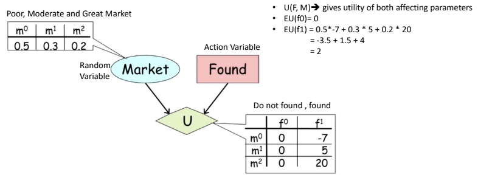
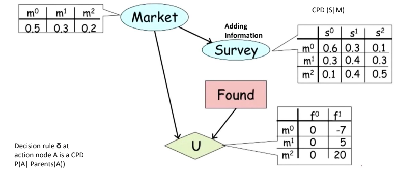
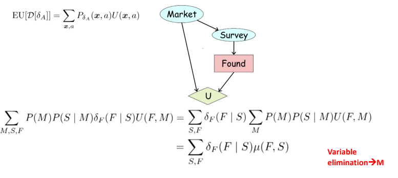
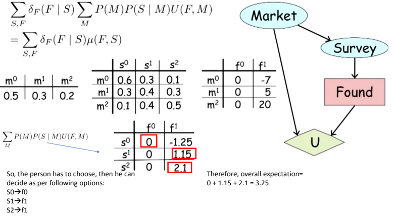
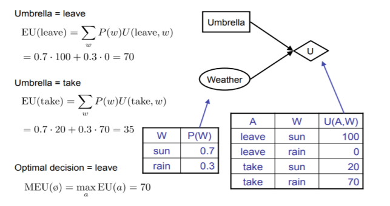
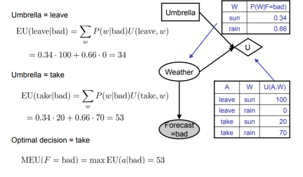

Maximum Expected Utility (MEU) is a decision-making principle used in decision theory. It suggests selecting the action that maximizes the expected utility or value of an outcome. MEU combines the probabilities of different outcomes with their associated utilities or values to calculate the expected utility. By choosing the action with the highest expected utility, decision-makers aim to optimize their decisions in the face of uncertainty.
A risk is :
An influence diagram (ID) is a compact graphical and mathematical representation of a decision situation. It is a generalization of a Bayesian network, in which not only probabilistic inference problems but also decision making problems (following the maximum expected utility criterion) can be modeled and solved.
Let us understand the influence diagrams from the example below.
A budding entrepreneur, who just graduated from college. And he wants to decide to found a widget
making company or not?
There are possible two actions Found, Not Found
If he founds a company, then it’s a risky strategy
Let mo, m1, m2 be market conditions.




MEU: choose the action which maximizes the expected utility given the evidence
can directly operationalize this with decision networks.
Bayesian Networks with nodes for utility and actions/
Lets us calculate the expected utility for each action.
New node types:
Chance nodes (just like BNS)
Actions (rectangles, cannot have parents, act as observed evidence)
Utility node (diamond, depends on action and chance nodes)
Consider the following example:


It is common wisdom that a “good” BN structure should correspond to causality, in that an edge X → Y often suggests that X “causes” Y , either directly or indirectly.
Although the two networks X → Y and Y → X are equivalent as probabilistic models, they will turn out to be very different as causal models.